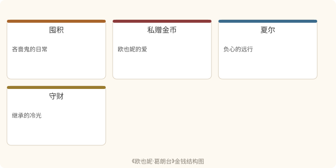

欧也妮·葛朗台
一、基本信息
| 作者 | 巴尔扎克 |
|---|---|
| 成书/出版 | 1833年（作者页 B039/B014 口径：欧也妮·葛朗台（1833）） Honoré de Balzac — Encyclopaedia Britannica（百科全书） |
| 国别/地区 | 法国 |
| 时代 | 近代 · 19世纪 |
| 体裁 | 长篇小说 |
| 语言 | 法语 |

《欧也妮·葛朗台》金钱结构图（主题·结构图）
二、创作背景
作者页（B039/B014）：巴尔扎克 major_works 载'欧也妮·葛朗台（1833）'（作者页定位，详见 gaolaotou 条核对）。
题材（通说待核）：索缪城吝啬鬼葛朗台与女儿欧也妮——金钱对亲情的腐蚀，《人间喜剧》'最出色的画幅之一'（通说待核）。
三、内容脉络
葛朗台的囤积与公债投机；欧也妮爱上堂弟夏尔并私赠金币（通说待核）。
父亲的死与欧也妮的守财继承——'金币的冷光'（通说待核）。
四、主要人物表
| 人物 | 身份 | 说明 |
|---|---|---|
| 葛朗台 | 箍桶匠 | 吝啬鬼典型（通说） |
| 欧也妮 | 女儿 | 牺牲的天使（通说待核） |
| 夏尔 | 堂弟 | 负心的巴黎青年（通说待核） |
五、主题与艺术特点
- 金钱对亲情的腐蚀（通说）。
- 吝啬鬼形象谱系的巅峰之一（通说）。
- 外省生活全景（通说待核）。
六、影响与评论
- 作者页：巴尔扎克《人间喜剧》代表作（B039/B014 作者页口径）。
Honoré de Balzac — Encyclopaedia Britannica（百科全书） - 作者页：巴尔扎克为《人间喜剧》的营造者（B014 作者级定位）。
Le Père Goriot — Encyclopaedia Britannica（百科全书）
七、阅读建议
难点
- 1830年代法国金融与继承法。
- 巴尔扎克式的长篇铺陈开场。
- 《欧也妮·葛朗台》（人民文学出版社傅雷译本，通说待核）。
- 法文原版（公有领域）。
《人间喜剧》入门首选之一（与《高老头》并列）。
八、待核实
- 1833年出版细节核对。
- 傅雷译本信息核对。
- 葛朗台临终'抓镀金十字架'情节待核。